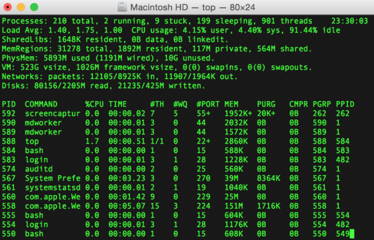

Learning the Terminal and Git
What is the Terminal?
The terminal is an interface in which you can type and execute text based commands.
This is how we access our Command Line Interface (CLI).
aka: program like a hacker!
What is the Terminal?
Where to find the Terminal?
- Finder
- Applications
- Utilities
Click and drag the icon into your dock, then double click to open.
Create your project
How to create a file system for your website in your terminal.
- ls: List what's in here
- cd: Change directory
- mkdir: Make a new directory
- touch: create or update a file
- mv: move a file from one place to another (important note!)
Terminal Commands
- The left/right arrow keys let you edit within a command
- The up/down arrow keys let you select previous commands
- CTRL+a goes to beginning of command, CTRL+e to the end.
- The tab auto-completes filenames
Task I:
- Create a "dev" folder in your main Documents folder
- Move all of your current code folders from your Desktop to this file
- Example: mv ~/Desktop/codingPractice ~/Documents/dev
Task II:
Use the Terminal to make the folder system for your new Portfolio Project
- Create the root folder in your new dev folder
- Make sure to add folders for your CSS and JS
- Add a new index.html file
GIT
Version Control System
What is it?
- A system that keeps records of your changes.
- Allows for collaborative development
- Allows you to know who made what changes and when.
- Allows you to revert any changes and go back to a previous state.
Example Flow
Alice creates this code and commits it as version 0:
function addTwo(num){
return num + 2;
}
Alice edits and commits as version 1:
function addThree(num){
return num + 3;
}
Example flow 2
Bob pulls the code from version 0 and edits:
function addTwo(num){
if (num === Infinity){
alert("Cannot add to infinity!");
}
return num + 2;
}
Bob pulls Alice's changes and it merges them:
function addThree(num){
if (num === Infinity){
alert("Cannot add to infinity!");
}
return num + 3;
}
Version Control
Version control systems are categorized as either "centralized" or "distributed"
Centralized version control systems are based on the idea that there is a single "central" copy of your project somewhere (probably on a server), and programmers will "commit" their changes to this central copy.
In distributed systems, every developers "clones" a copy of a repository and has the full history of the project on their own hard drive.
Centralized vs distributed systems
What is Git?
Git is a popular version control system! There are others but this is considered by many to be the best.
Git allows groups of people to work on the same documents (often code) at the same time, and without stepping on each other's toes.
Goals of Git Design
- Fast--add to you team and code base quickly
- Each commit has a corresponding hash (it tracks the changes from everyone)
- Everyone has a local copy of the history of the source code
Install git
http://git-scm.com/downloadsHow does git work?
It can be complicated at first, but there are a few key concepts. Don't get too worried about the names -- you will get them over time!
Important GIT terms in the following slides will be in yellow.

Key Concept:Snapshots
- The way git keeps track of your code history
- Essentially records what all your files look like as a given point in time
- You decide when to take a snapshot and of what files
- You can do back and visit any snapshot
Key Concept:Commit
- The act of creating a snapshot
- Can be a noun or a verb ("I committed code" or "I just made a new commit"
- Essentially, a project is made up of a bunch of commits
Key Concept:Commit
Commits contain three pieces of information.
- Information about how the files changed from previously
- A reference to the commit that came before it (this is called the parent commit)
- A hashcode name (this will look something like: fb2dec48987dfgdf8798dfg7dfg87dfg79sdsfsdf7sdf78h9n
Key Concept:Repository
- Often called a 'repo'
- A collection of all the files and the history of all those files
- Consists of all of your commits
- Place where all you hard work is stored!
Key Concept:Repository
- Can live on a local machine (aka your computer) or on a remote server (like Github!)
- The act of copying a repository from a remote server is called cloning
- Cloning from a remote server allows teams to work together.
Key Concept:Repository
- The process of downloading commits that don't exist on your machine from a remote repository is called pulling changes.
- The process of adding your local changes to the remote repository is called pushing changes
Key Concept:Branches
- All commits in git live on a branch
- But there can be many many branches
- The main branch in a project is called the master branch.
Getting Started
You can create repositories that are version controlled on your own computer. These are called local repositories.
The cool thing about distributed systems is that this repo acts the same way as if it were a remote repo.
Creating a local repository
When creating a new project on your local machine using git, you will first create a new repository.
To use git, we will use the terminal.
To begin, open the Terminal, and move to where you want to place your project on your local machine using the 'cd' (change directory) command.
Lauras-MacBook-Pro:~ laurahackney$ cd Documents
Lauras-MacBook-Pro:~ laurahackney$ cd dev
Lauras-MacBook-Pro:~ laurahackney$ mkdir newProject
Lauras-MacBook-Pro:~ laurahackney$ cd newProject
Creating a local repository
To initialize a git repository in the root of the folder, run the git init command.
Lauras-MacBook-Pro:newProject laurahackney$ git init
Initialized empty Git repository in /Users/laurahackney/Documents/dev/newProject
Add a new File to the Repo
Go ahead and add a new file to the project by running a touch command.
Lauras-MacBook-Pro:newProject laurahackney$ touch index.html
Lauras-MacBook-Pro:newProject laurahackney$ ls
Once you have added or modified files in a folder containing a git repo, git will notice that changes have been made inside the repo. But, git won't officially keep track of the file (that is, put it in a commit), unless you tell it to.
Visual studio code!
Git status check
After creating the new file, you can use the git status command to see which files git knows exist.
Lauras-MacBook-Pro:newProject laurahackney$ git status
On branch master
Initial commit
Untracked files:
What is this is saying is, "Hey, we noticed you created a new file, but we aren't going to do anything with it until you tell us to add it."
Running a commit
To add a file to a comit, you first need to add it to the staging environment. To go this, you can use the git add command
Lauras-MacBook-Pro:newProject laurahackney$ git add index.html
Once you've used the git add command to add all the files you want to the staging environment, you can then tell git to package them into a commit using the git commit command
Lauras-MacBook-Pro:newProject laurahackney$ git commit -m "Initial commit!"
Check your work with git log
Review
- git init
- git add
- git status
- git commit -m "text"
- git log
Exercises
Look over this one: Setting up a Repo
We will do this one together. Do the first nine exercises. Exercises
For you to look at later Git 101
Let's make this easier

Sourcetree
Go to sourcetreeapp.com
Visual tour and logging in with a Github account
Github!

What is Github?
www.github.com
- It is the largest web-based git repository hosting service
- Allows for code collaboration with anyone online
- Adds a bunch of features like bug tracking!
- Check out our AnnieCannons github Repo
Using Remote Repos
To synchronize with a remote repository, first tell Git about it
Lauras-MacBook-Pro:newProject laurahackney$ git remote add origin git://github.com/username/repo
To push changes, use git push
Lauras-MacBook-Pro:newProject laurahackney$ git push origin master
To pull changes, use git pull
Lauras-MacBook-Pro:newProject laurahackney$ git pull origin master
OR! Use sourcetree!!
Fork a Repo!
AC Algorithms
Your first pull!
THE END
Thank you for your attention!